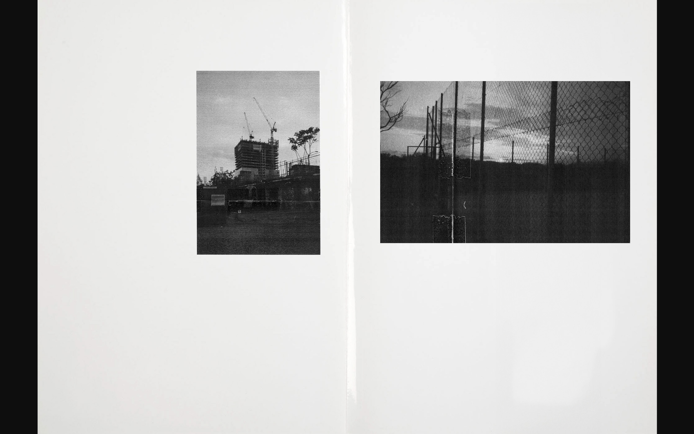
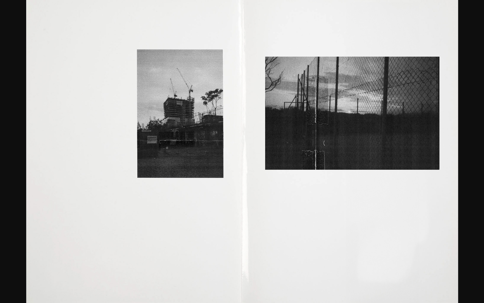

2025
Pablo Castillo Website
Work in progress
Experimental website experience designed and developed for Barcelona-based
photographer Pablo Castillo.
2025
PontIA.tech
.jpg)
.jpg)

.jpg)
PontIA is an online school based in Madrid, specialized in Big Data
and Artificial Intelligence.
2025
Amics, companys i mestres


A work that brings together the author's experiences and reflections
on the people who have shaped his personal life.
2024
Alex Magazine Koningsdag 2024
Open Publication
Editorial design of "ALEX" magazine, with over 6.000 printed copies distributed
across the Utrecht-Oost district
2024
Frame tha Game

Frame The Game is an Amsterdam company specializing
in framing signed football shirts.
2024
This is also about art


A book that explores the course of art over the past thirty years,
highlighting the transformations, movements, and most influential artists.
2024
AI-Urbanwell

A project that explores how diverse environments shape well-being,
focusing on the relationship between space, perception, and quality of life.
2023
Júlia Coldwell Photobook


 



A photo series by Júlia Coldwell, a director and photographer,
exploring visual narratives through a distinctive lens.